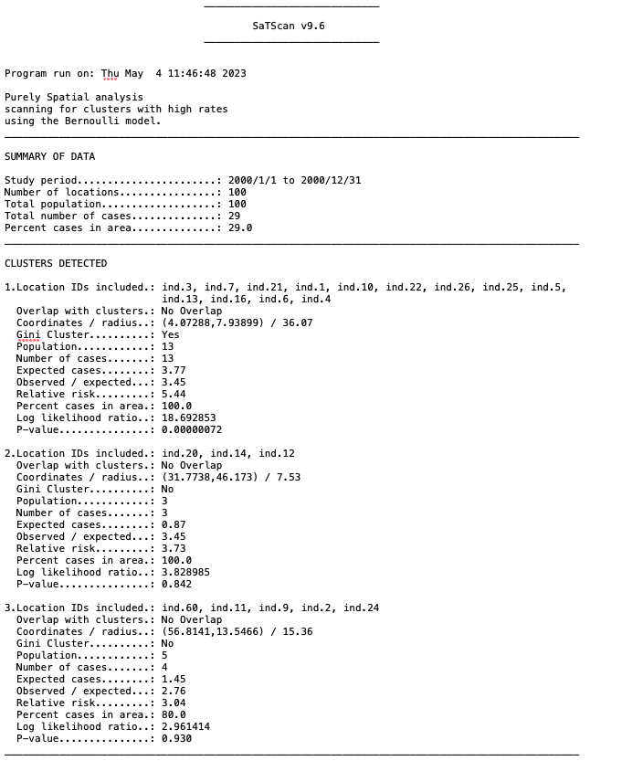
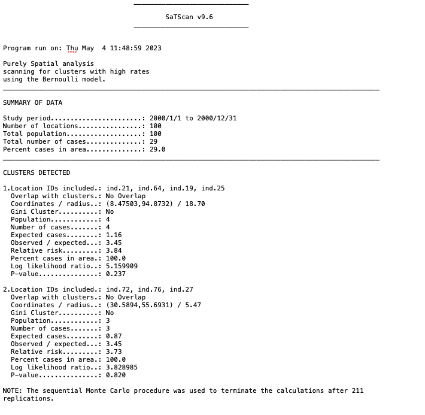

Spatial statistics tutorial
Marie Gilbertson
2023-05-03
Preamble
What this tutorial does:
- Demonstrates some common spatial statistical approaches - namely, tests for spatial autocorrelation, global clustering, and local clustering - with animal infectious disease data. Most of these tests will be done in R!
What this tutorial does NOT do:
- Tell you what to do with your data. Or really explain much about underlying theory. That’s all the purview of stats classes, textbooks, workshops, and the like. This is meant to be a purely technical reference. However, one good place to start if you’re just trying to pick a stastical test is this excellent overview from Kanankege et al..
Now that we’ve got the disclaimers out of the way, let’s get started!
First things first, let’s load the R packages we’ll need.
##### Clear Environment #####
remove(list=ls())
#### load libraries ####
library(sf)
library(terra)
library(ggplot2)
library(ape) # Moran's I
library(ade4) # Mantel test
library(smacpod) # for Cuzick and Edward's test
library(spatstat) # to make ppp for C/E test
library(ggforce)Simulate data
For simplicity, we’re going to simulate some data. First, we’ll simulate individuals on a landscape. Our landscape will have two “habitat types” - a good one and a bad one. Our simulated individuals will be more likely to be found in our good habitat.
## 100x100 landscape with low and high quality habitat (habitat = 1 or 2, respectively)
m <- matrix(1, nrow = 100, ncol = 100)
m[0:40, 0:50] <- m[40:80, 0:100] <- m[80:100, 50:100] <- 2
landscape <- rast(m) # convert our matrix to a raster
plot(landscape)
## for sampling points within our two landscape types, we'll extract separate high and low quality habitat patches as polygons
poly <- as.polygons(landscape, dissolve = T)
poly <- st_as_sf(poly)
poly1 <- poly$geometry[[1]]
poly2 <- poly$geometry[[2]]Now we’ll simulate our population in our landscape, assuming we’ll have a higher probability of finding individuals in good habitat (habitat = 2) than bad habitat (habitat = 1).
set.seed(65187) # set seed for reproducibility
## sample from the two habitat polygons we made in previous step
inds1 <- st_sample(poly1, size = 15)
inds2 <- st_sample(poly2, size = 85)
## extract coordinates for our sample points and combine into a single dataframe
inds1.coords <- st_coordinates(inds1)
inds2.coords <- st_coordinates(inds2)
inds.coords <- data.frame(rbind(inds1.coords, inds2.coords))
## plot it!
ggplot() + geom_sf(data = poly, aes(fill = as.factor(lyr.1))) +
geom_sf(data = inds1) +
geom_sf(data = inds2) +
scale_fill_manual(values = c("#f7fcb9", "#41ab5d"), name = "habitat quality") +
theme_bw()Now that we have our population, let’s simulate two scenarios: one where disease is clustered in the south-west corner of the landscape, and one where disease is randomly distributed across the landscape.
## Take the subset of individuals in the "southwest" and the subset of "everyone else"
sw.inds <- inds.coords[inds.coords$X<50 & inds.coords$Y<50,]
oth.inds <- inds.coords[inds.coords$X>=50 | inds.coords$Y>=50,]
## plot our southwest individuals to see that it worked
ggplot() + geom_sf(data = poly, aes(fill = as.factor(lyr.1))) +
geom_point(data = sw.inds, aes(x = X, y = Y)) +
scale_fill_manual(values = c("#f7fcb9", "#41ab5d"), name = "habitat quality") +
theme_bw()## now take a random sample of 80% of our southwest individuals to have our infectious disease
sw.dz <- sample(1:nrow(sw.inds), size = round(0.8*nrow(sw.inds), 0), replace = F)
sw.dz # our infected individuals in the southwest corner## [1] 1 11 18 15 22 24 9 4 2 21 13 14 7 3 10 16 5 26 20 25 6 12sw.inds$dz <- 0
sw.inds$dz[sw.dz] <- 1
## And for "everyone else," let's randomly select 10% of our individuals to have the disease
oth.dz <- sample(1:nrow(oth.inds), size = round(0.1*nrow(oth.inds), 0), replace = F)
oth.dz## [1] 73 3 67 61 39 68 46oth.inds$dz <- 0
oth.inds$dz[oth.dz] <- 1
## let's put everyone back together again and plot it, with our infected individuals showing up as red points
clust.dz <- rbind(sw.inds, oth.inds)
ggplot() + geom_sf(data = poly, aes(fill = as.factor(lyr.1))) +
geom_point(data = clust.dz, aes(x = X, y = Y, color = as.factor(dz))) +
scale_fill_manual(values = c("#f7fcb9", "#41ab5d"), name = "habitat quality") +
scale_color_manual(values = c("#000000", "#cb181d"), name = "disease status") +
ggtitle("Clustered disease scenario") +
theme_bw()## for our random disease scenario, let's get the same number of infections, but have them randomly distributed across the landscape
all.dz <- sample(1:nrow(inds.coords), size = sum(clust.dz$dz), replace = F)
rand.dz <- inds.coords
rand.dz$dz <- 0
rand.dz$dz[all.dz] <- 1
ggplot() + geom_sf(data = poly, aes(fill = as.factor(lyr.1))) +
geom_point(data = rand.dz, aes(x = X, y = Y, color = as.factor(dz))) +
scale_fill_manual(values = c("#f7fcb9", "#41ab5d"), name = "habitat quality") +
scale_color_manual(values = c("#000000", "#cb181d"), name = "disease status") +
ggtitle("Random disease scenario") +
theme_bw()Spatial autocorrelation
Perhaps we should start by talking about what spatial autocorrelation is in the first place… Simply put, spatial autocorrelation means that things or individuals that are close together in space are more likely to be similar to each other than things or individuals more distant in space.
From an infectious disease perspective, this means we might expect individuals that are closer together to be more likely to have the same disease status (both have the disease or both are free from the disease), compared to individuals that are further apart from each other.
Technically, what I’ve described is positive spatial autocorrelation. If the null hypothesis is that an attribute is distributed randomly across the landscape, positive spatial autocorrelation means similar attributes are more likely to be closer to each other (they appear clustered). Negative spatial autocorrelation means similar attributes are more likely to be distant or dispersed (imagine matching poles on a bunch of magnets, all trying to stay away from each other). In the infectious disease world, we’re generally interested in patterns of clustering, so from here on out, when I say “spatial autocorrelation,” I really just mean positive autocorrelation.
There are lots of different tests for spatial autocorrelation, but we’re going to focus on just two: Moran’s I and the Mantel test.
Moran’s I
For more info on calculating Moran’s I in R, you can also see this tutorial.
We’ll calculate Moran’s I for both our clustered and our random disease scenarios. First, we’ll make an inverse distance matrix between our points. Since our individuals are the same in both scenarios, we’ll just make one matrix that works for both.
ind.dists <- as.matrix(dist(cbind(clust.dz$X, clust.dz$Y))) # distance matrix
ind.dists.inv <- 1/ind.dists # take the inverse
diag(ind.dists.inv) <- 0 # make the diagonals = 0
ind.dists.inv[1:5, 1:5]## 1 2 3 4 5
## 1 0.00000000 0.05025314 0.04906362 0.06265893 0.10437031
## 2 0.05025314 0.00000000 0.02539472 0.19773471 0.09144795
## 3 0.04906362 0.02539472 0.00000000 0.02772351 0.03346903
## 4 0.06265893 0.19773471 0.02772351 0.00000000 0.15470510
## 5 0.10437031 0.09144795 0.03346903 0.15470510 0.00000000Moran.I(clust.dz$dz, ind.dists.inv)## $observed
## [1] 0.1369854
##
## $expected
## [1] -0.01010101
##
## $sd
## [1] 0.01751031
##
## $p.value
## [1] 0Moran.I(rand.dz$dz, ind.dists.inv)## $observed
## [1] -0.01963193
##
## $expected
## [1] -0.01010101
##
## $sd
## [1] 0.01751031
##
## $p.value
## [1] 0.586233For our clustered disease scenario, we see we have evidence for spatial autocorrelation, while our random scenario fails to reject the null hypothesis of zero spatial autocorrelation.
Mantel test
For more info on performing Mantel tests in R, you can also see this tutorial.
A quick caveat here: Mantel tests have a known limitation of potentially inflating Type I error (Guillot and Rousset, 2013), so they should be used with caution. I have used them in a study of spatial autocorrelation in pathogen exposure among puma (Puma concolor; Gilbertson et al 2016), so it can be done…just be careful with interpretation.
What we’re fundamentally doing with a Mantel test is comparing two different pairwise distance matrices: one representing the geographic distance between individuals, and one representing the attribute “distance” between individuals.
geo.dists <- dist(cbind(rand.dz$X, rand.dz$Y)) # geographic distance matrix
clust.dists <- dist(clust.dz$dz) # attribute distance matrix (clustered disease scenario)
rand.dists <- dist(rand.dz$dz) # attribute distance matrix (random disease scenario)
# Mantel test for our clustered disease scenario
mantel.rtest(geo.dists, clust.dists, nrepet = 9999)## Warning in is.euclid(m2): Zero distance(s)## Monte-Carlo test
## Call: mantel.rtest(m1 = geo.dists, m2 = clust.dists, nrepet = 9999)
##
## Observation: 0.07283256
##
## Based on 9999 replicates
## Simulated p-value: 0.0101
## Alternative hypothesis: greater
##
## Std.Obs Expectation Variance
## 2.4950045145 0.0001786666 0.0008479595# Mantel test for our random disease scenario
mantel.rtest(geo.dists, rand.dists, nrepet = 9999)## Warning in is.euclid(m2): Zero distance(s)## Monte-Carlo test
## Call: mantel.rtest(m1 = geo.dists, m2 = rand.dists, nrepet = 9999)
##
## Observation: -0.0001344776
##
## Based on 9999 replicates
## Simulated p-value: 0.479
## Alternative hypothesis: greater
##
## Std.Obs Expectation Variance
## -0.0003113500 -0.0001253638 0.0008568343As with Moran’s I, our Mantel tests show that we have evidence of spatial autocorrelation in our clustered disease scenario, but we fail to reject the null hypothesis for our random scenario. Hooray!
Global clustering
Next, we’re going to perform a test for global clustering. In this case, we’ll perform Cuzick and Edwards test, using the smacpod package. The function for doing so requires our data be in a “point patttern” dataset, so that’s our first step. We’ll also look across a range of nearest neighbors in our Cuzick and Edwards test.
# the ppp() function requires a "window of observation"
obs.window <- owin(xrange=c(min(rand.dz$X), max(rand.dz$X)), yrange = c(min(rand.dz$Y), max(rand.dz$Y)))
# create our point process object; since this includes disease status, we'll have separate pp objects for our two disease scenarios
clust.pp <- ppp(x = clust.dz$X, y = clust.dz$Y, window = obs.window, marks = as.factor(clust.dz$dz))
rand.pp <- ppp(x = rand.dz$X, y = rand.dz$Y, window = obs.window, marks = as.factor(rand.dz$dz))
levels(clust.pp$marks) # our case state is in position 2, so we'll set case = 2 in the qnn.test funtion:## [1] "0" "1"qnn.test(clust.pp, q = c(1, 3, 5, 7, 9, 11), nsim = 999, case = 2, longlat = F)## 1 has been selected as the case group## Q nearest neighbors test
##
## case label: 1
## control label: 0
##
## Summary of observed test statistics
##
## q Tq pvalue
## 1 17 0.003
## 3 54 0.001
## 5 85 0.001
## 7 120 0.001
## 9 153 0.001
## 11 187 0.001
##
## Summary of observed contrasts between test statistics
##
## contrast Tcontrast pvalue
## T3 - T1 37 0.001
## T5 - T1 68 0.001
## T7 - T1 103 0.001
## T9 - T1 136 0.001
## T11 - T1 170 0.001
## T5 - T3 31 0.002
## T7 - T3 66 0.001
## T9 - T3 99 0.001
## T11 - T3 133 0.001
## T7 - T5 35 0.001
## T9 - T5 68 0.001
## T11 - T5 102 0.001
## T9 - T7 33 0.001
## T11 - T7 67 0.001
## T11 - T9 34 0.001qnn.test(rand.pp, q = c(1, 3, 5, 7, 9, 11), nsim = 999, case = 2, longlat = F)## 1 has been selected as the case group## Q nearest neighbors test
##
## case label: 1
## control label: 0
##
## Summary of observed test statistics
##
## q Tq pvalue
## 1 5 0.904
## 3 25 0.458
## 5 39 0.608
## 7 58 0.462
## 9 69 0.712
## 11 81 0.861
##
## Summary of observed contrasts between test statistics
##
## contrast Tcontrast pvalue
## T3 - T1 20 0.206
## T5 - T1 34 0.432
## T7 - T1 53 0.312
## T9 - T1 64 0.577
## T11 - T1 76 0.761
## T5 - T3 14 0.777
## T7 - T3 33 0.506
## T9 - T3 44 0.803
## T11 - T3 56 0.897
## T7 - T5 19 0.269
## T9 - T5 30 0.719
## T11 - T5 42 0.875
## T9 - T7 11 0.955
## T11 - T7 23 0.976
## T11 - T9 12 0.916We’re focusing on the “Summary of observed test statistics” in our results. There, we can see that our Cuzick and Edwards test has identified global clustering of cases in our clustered disease scenario across a wide range of nearest neighbors, while there is no evidence of global clustering in our random disease scenario. Excellent!
Local clustering
Lastly, we’re going to look for evidence of local clustering - especially instances where we can identify specific clusters of disease occurrence. To do this, we’re going to use a spatial scan statistic…and we’re going to venture away from R. That’s right, we’re going to use the software SaTScan. If you’ve never used SaTScan before, you can download it for free; I also strongly recommend checking out the user manual as it is enormously helpful (don’t read the whole thing - just the bits that you need for your own analysis).
Basically, SaTScan is going to pass a “scanning window” over our study area and look for windows in which we have an unexpected number of cases. This is a gross oversimplification of the process and SaTScan can do lots more complex analyses than what I’m showing here…but this is a good place to start.
Now, the first important piece of business is deciding what statistical model we’ll be using. Since we have binomial (0/1) disease data, we can run a simple Bernoulli model. We can check out the SaTScan user manual to read up on the model:
Screenshot of the SaTScan Table of Contents
Check out the screenshot from the user manual about the Bernoulli Model:
Again: go check out that “user manual” link at the top of this section. The point here is that the user manual provides great info on your model choices and tells you what data you’ll need to provide the software.
At a minimum, for our Bernoulli model, we need to provide SaTScan with three files: (1) a case file, (2) a control file, and (3) a coordinates file. We’ll generate those in R for best reproducibility.
For both our case and control files, we need to make a .csv file with a location ID (we can use an animal ID) and the number of cases or controls per location ID (since our location IDs are individuals, we’ll just have one case/control per location). Here, our cases are our diseased individuals (dz = 1), and our controls are our disease free individuals (dz = 0). If we were doing a temporal analysis, we would also provide a date/time for each location ID. Because we have two disease scenarios, we’ll have a total of two case files and two control files.
clust.dz$id <- paste0("ind.", seq(1, nrow(clust.dz))) # let's give them individual IDs
clust.cases <- clust.dz[clust.dz$dz==1,] # take just the cases
clust.cases$no.cases <- 1
clust.cases <- clust.cases[,c("id", "no.cases")]
rand.dz$id <- paste0("ind.", seq(1, nrow(rand.dz))) # we need to give our random scenario individuals IDs as well
rand.cases <- rand.dz[rand.dz$dz==1,] # take just the cases
rand.cases$no.cases <- 1
rand.cases <- rand.cases[,c("id", "no.cases")]
clust.ctrls <- clust.dz[clust.dz$dz==0,] # now just the controls
clust.ctrls$no.ctrls <- 1
clust.ctrls <- clust.ctrls[,c("id", "no.ctrls")]
rand.ctrls <- rand.dz[rand.dz$dz==0,]
rand.ctrls$no.ctrls <- 1
rand.ctrls <- rand.ctrls[,c("id", "no.ctrls")]
# check out how the case file is structured
head(clust.cases)## id no.cases
## X3 ind.1 1
## X4 ind.2 1
## X5 ind.3 1
## X7 ind.4 1
## X9 ind.5 1
## X3.1 ind.6 1# and we can compare that structure to the control file
head(clust.ctrls)## id no.ctrls
## X7.1 ind.8 1
## X42 ind.17 1
## X51 ind.19 1
## X71 ind.23 1
## X82 ind.27 1
## X1 ind.28 1Next, we need to make our coordinates files. This file needs to have our coordinate locations (SaTScan can handle lat/long or cartesian coordinates), as well as location IDs.
# clustered disease scenario coordinates
clust.coords <- clust.dz[,c("id", "X", "Y")]
rand.coords <- rand.dz[,c("id", "X", "Y")]
# check out how the coordinates file is structured
head(clust.coords)## id X Y
## X3 ind.1 23.057387 15.355349
## X4 ind.2 42.929933 14.324681
## X5 ind.3 4.072883 7.938994
## X7 ind.4 38.889596 17.366353
## X9 ind.5 32.425685 17.364253
## X3.1 ind.6 36.182093 21.698143Lastly, we’ll write out each of these files as a .csv file, which we can then import into SaTScan.
write.csv(clust.cases, file = "SaTScan_files/clust_cases.csv", row.names = F)
write.csv(clust.ctrls, file = "SaTScan_files/clust_ctrls.csv", row.names = F)
write.csv(rand.cases, file = "SaTScan_files/rand_cases.csv", row.names = F)
write.csv(rand.ctrls, file = "SaTScan_files/rand_ctrls.csv", row.names = F)
write.csv(clust.coords, file = "SaTScan_files/clust_coords.csv", row.names = F)
write.csv(rand.coords, file = "SaTScan_files/rand_coords.csv", row.names = F)Here’s where we take things over the SaTScan!
When you first open SaTScan, you’ll see a window like that pictured below. Click “Create New Session”

You’ll then see the main SaTScan window where you can input your data. We’ll start by loading our case data from our clustered disease scenario. To do so, click on the button with three dots next to the “Case File” window (see red arrow below):
After navigating to where we saved our clustered scenario case file, we then follow the prompts to tell SaTScan a little more about our file (e.g., what data is in each column, where to save the “.cas” file SaTScan needs):
I didn’t make a video of it, but you’d repeat the same basic process for the controls file.
Next, we can load our coordinates file, making sure we toggle if we are using Lat/Long or Cartesian coordinates:
Once we have all our files loaded, we can make selections in the analysis tab. It’s also important to check out the options in the “advanced” box; in particular, it is best practice to re-run a SaTScan analysis with several different maximum spatial cluster sizes.
Before we proceed, we also need to make selections for where to save the output - and what output we want! Especially when you’re using real animal data, instead of our simulations, it can be handy to have SaTScan export a shapefile or KML file to quickly see where any identified clusters are located in real space. When selecting where to save your primary results file, use the three-dot button to open up the menu and pick a location and file name (see arrow below):
Finally, we can run our analysis! Simply click the big green play button at the top of the SaTScan window and view your results!
Looking at the output text file from our clustered disease scenario, we can see that SaTScan identified one statistically significant cluster, and we have information about the location and size of this cluster.

In contrast, the SaTScan analysis of our random disease scenario did not find any statistically significant clusters:

We can go ahead and plot the clusters we identified with SaTScan for our clustered disease scenario.
ggplot() + geom_sf(data = poly, aes(fill = as.factor(lyr.1))) +
geom_point(data = clust.dz, aes(x = X, y = Y, color = as.factor(dz))) +
scale_fill_manual(values = c("#f7fcb9", "#41ab5d"), name = "habitat quality") +
scale_color_manual(values = c("#000000", "#cb181d"), name = "disease status") +
geom_circle(aes(x0 = 4.07288, y0 = 7.93899, r = 36.07), linetype = 'dashed', fill = "transparent", color = "#cb181d") +
theme_bw()We’ve successfully identified a local cluster! You’ll notice how our circle goes way off our simulated landscape, which is an important reminder that SaTScan includes these external areas in its scanning. If this were real data, I’d probably play around with the SaTScan settings a bit to see if there are some overlapping clusters that perhaps stick closer to the study area.
Well, that’s all for now!
Thanks for checking out the tutorial, and I hope it was remotely useful!
sessionInfo()## R version 4.2.0 (2022-04-22)
## Platform: x86_64-apple-darwin17.0 (64-bit)
## Running under: macOS Big Sur 11.7.6
##
## Matrix products: default
## LAPACK: /Library/Frameworks/R.framework/Versions/4.2/Resources/lib/libRlapack.dylib
##
## locale:
## [1] en_US.UTF-8/en_US.UTF-8/en_US.UTF-8/C/en_US.UTF-8/en_US.UTF-8
##
## attached base packages:
## [1] stats graphics grDevices utils datasets methods base
##
## other attached packages:
## [1] doRNG_1.8.2 rngtools_1.5.2 foreach_1.5.2 crawl_2.3.0 lubridate_1.9.2 adehabitatHR_0.4.19 deldir_1.0-6 momentuHMM_1.5.5 ggforce_0.4.1
## [10] spatstat_2.3-4 spatstat.linnet_2.3-2 spatstat.core_2.4-4 rpart_4.1.16 nlme_3.1-157 spatstat.random_3.1-3 spatstat.geom_3.0-5 spatstat.data_3.0-0 smacpod_2.5
## [19] ape_5.6-2 terra_1.6-41 vembedr_0.1.5 moveVis_0.10.5 move_4.1.8 geosphere_1.5-14 raster_3.6-11 ggplot2_3.4.0 sf_1.0-9
## [28] adehabitatLT_0.3.25 CircStats_0.2-6 boot_1.3-28 MASS_7.3-56 adehabitatMA_0.3.14 ade4_1.7-19 rgeos_0.5-9 rgdal_1.6-2 sp_1.6-0
## [37] rmarkdown_2.16
##
## loaded via a namespace (and not attached):
## [1] colorspace_2.0-3 class_7.3-20 rstudioapi_0.14 proxy_0.4-27 farver_2.1.1 fansi_1.0.3 mvtnorm_1.1-3 xml2_1.3.3 codetools_0.2-18
## [10] splines_4.2.0 doParallel_1.0.17 cachem_1.0.6 knitr_1.39 polyclip_1.10-0 jsonlite_1.8.3 spatstat.sparse_3.0-0 compiler_4.2.0 httr_1.4.4
## [19] assertthat_0.2.1 Matrix_1.4-1 fastmap_1.1.0 cli_3.6.0 tweenr_2.0.2 htmltools_0.5.3 tools_4.2.0 gtable_0.3.1 glue_1.6.2
## [28] dplyr_1.0.10 smerc_1.7.2 Rcpp_1.0.10 jquerylib_0.1.4 vctrs_0.5.2 av_0.8.3 iterators_1.0.14 lwgeom_0.2-10 xfun_0.35
## [37] stringr_1.5.0 timechange_0.2.0 lifecycle_1.0.3 goftest_1.2-3 scales_1.2.1 spatstat.utils_3.0-1 Brobdingnag_1.2-7 slippymath_0.3.1 parallel_4.2.0
## [46] yaml_2.3.6 curl_4.3.3 memoise_2.0.1 pbapply_1.6-0 sass_0.4.4 stringi_1.7.12 highr_0.9 plotrix_3.8-2 e1071_1.7-12
## [55] gifski_1.6.6-1 rlang_1.0.6 pkgconfig_2.0.3 evaluate_0.15 lattice_0.20-45 tensor_1.5 labeling_0.4.2 cowplot_1.1.1 tidyselect_1.2.0
## [64] magrittr_2.0.3 R6_2.5.1 magick_2.7.4 generics_0.1.3 DBI_1.1.3 pillar_1.8.1 withr_2.5.0 mgcv_1.8-40 units_0.8-0
## [73] abind_1.4-5 tibble_3.1.8 KernSmooth_2.23-20 utf8_1.2.2 grid_4.2.0 digest_0.6.30 classInt_0.4-8 numDeriv_2016.8-1.1 munsell_0.5.0
## [82] bslib_0.4.1